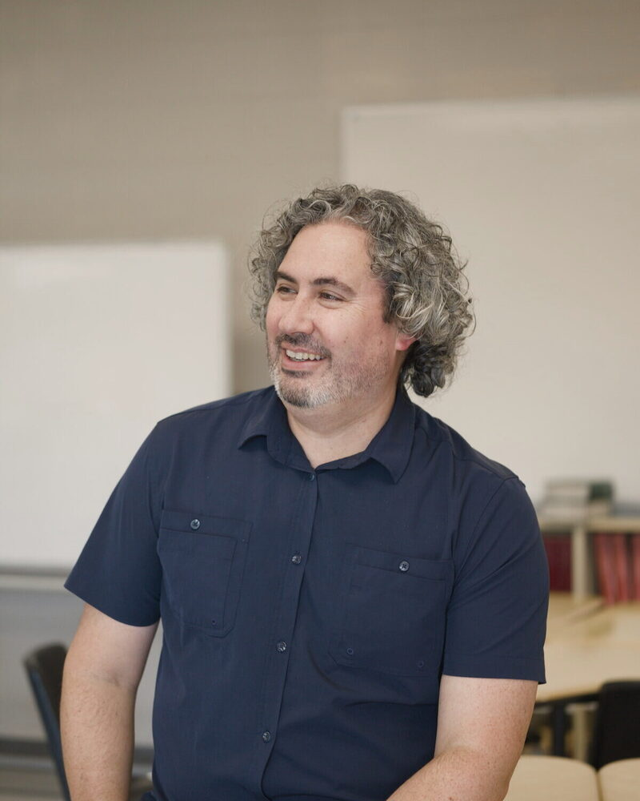
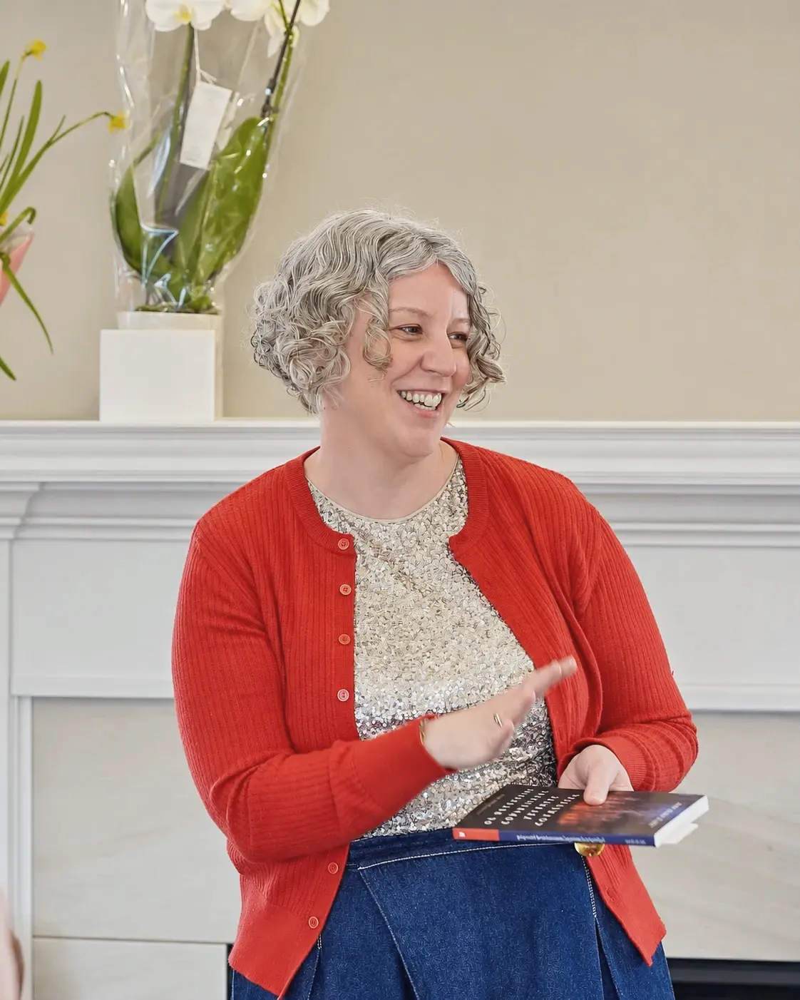
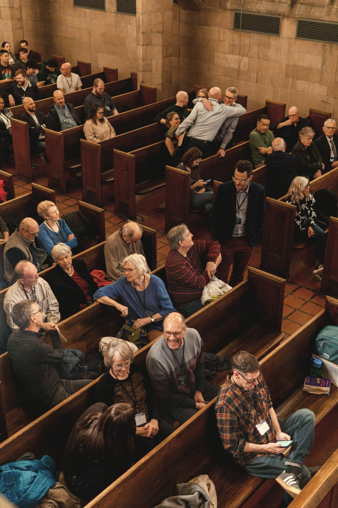

David Grills
Read David’s storyI think teachers should be the first learners in their classroom.
Our fiscal year runs July 1 to June 30. Download the PDF. Our students’ stories are told in full in the Impact Report.
Forward progress: Dan Beerens on a year in which our gains outweighed our losses.
As a football fan, I am always heartened when credit is given for the forward progress of the runner or receiver, even though they may have been tackled and dragged backward for several yards before the play is blown dead. Institutions can sometimes get tackled and dragged backward too, but I am pleased to report that this year our gains have outweighed our losses! Although I am entering my last year as board chair, I feel more optimistic than ever about ICS. Here are some reasons why:
Thank you for your interest and support, and for cheering us on as an ICS community to continue to be faithful! Your encouragement helps us get up and line up again. We press on with an open heart to all, asking the hard questions without fear, pondering and wondering together what it means to follow the way of Christ.
Sincerely,Dan BeerensChair, Board of Trustees, Institute for Christian Studies

Beth Green on the year behind us, her first months as President, and the work ahead.
Dear members and friends of ICS, an annual report asks two things of a president: an account of the year just ended, and an honest word about where we are going. I became President on July 1, so the first is mostly a story of other people’s faithfulness, and the second is still being written, with you.
The year reported here was led by Ron Kuipers, and I’m grateful for how steadily and hopefully he led it. It opened at the Fall Retreat and with the celebration of the life of Calvin Seerveld, and it closed at Convocation, where four graduates received their degrees and John A. Olthuis was awarded an honorary Doctor of Letters. In between, Senate approved a new Master of Worldview Studies in Education for teachers and school leaders, Free to be Faithful brought ICS scholarship to 187 course registrants, and Neal DeRoo and Edith van der Boom published new books. Ron continues to serve the ICS as Interim Academic Dean, so this is a thank-you, not a farewell.
In my first weeks I did what newcomers should: I listened, asking Senior Members, staff and trustees three questions. What are the biggest challenges facing ICS? What are our most promising opportunities for growth? How should we pursue them? The answers were candid. People named the ordinary strains of a small school doing a great deal: communication and processes that need to be clearer, and resources stretched thin. They also named real opportunities: room in our programs for more students, alumni who want to stay close, churches beyond the Christian Reformed denomination, and younger generations we have yet to reach.
From that listening came three priorities for this year, which I’ve shared with the community and the Board. The first is caring for our team, the Senior Members and staff who carry this work. The second is visibility: telling the ICS story to new and existing audiences. In September Ron Kuipers and Neal DeRoo joined about eighty pastors and leaders from churches that have left the Christian Reformed Church in North America at the Waymaker conference in Edmonton, and I travelled to Grand Rapids to meet the board of Friends of ICS and to British Columbia to meet with ICS supporters. At these events, among others, we’ve focused on connecting, strengthening old ties and forging new ones. The third is funding the future: putting advancement first and broadening where our revenue comes from. We sent seven grant applications and letters of intent in September and October alone.
Where does that leave us? In a stronger place than a year ago, and not yet where we need to be. In the fiscal year 2025–26, donations rose by nearly half and 56 new donors gave to ICS for the first time. Tuition revenue grew by 45 percent. Our deficit fell to $121,623, from $282,074 in 2024–25 and $441,670 in 2023–24. Fourteen PhD Junior Members are studying with us this fall, twice as many as in 2022. But we still spend more than we bring in, and closing that gap is the work of the next few years. Our finance pages set this out plainly.
My hope is not for a different ICS but for one more fully itself: a community where Junior Members learn to think well and faithfully, where pastors, teachers and curious adults can bring their hardest questions, and where our confidence rests on the grace of God rather than on positive thinking. Thank you for being part of it. I look forward to seeing many of you at our Annual General Meeting on December 12.
Beth GreenPresident, Institute for Christian Studies
Enrolment in our degree and certificate programs has grown every fall since 2022, and the PhD has doubled.
Students enrolled in a degree or certificate program on October 1, counted once each. The count includes students writing a thesis or dissertation, so it is higher than the number taking courses.
Enrolments on October 1, 2026. One student is enrolled in two programs.
Behind the numbers: two Junior Members and a graduate. Their stories are told in full in our Impact Report.
Each student counted once a year. 2025–26 and 2026–27 count the fiscal year, July to June; for 2026–27, 40 students had registered by November 19, 2026, and the rest of the year is projected from the past three years.
Students who took at least one course in 2025–26.
Almost all of the change in students taking courses since 2023–24 is among non-degree and audit students. The number of degree students taking courses has held steady.

The questions we study belong to the whole church. This year our lifelong learning programs took them well beyond St. George Street.
Short courses for pastors, teachers, and curious adults.
The Summer Big Read drew 1,277 registrants.
Reenchanting the World and Courageous Faith in a Time of Fear.
Essays on faith, scholarship, and public life.
| Donation income | ||
|---|---|---|
| General donations | $577,514 | |
| Church contributions | 36,794 | |
| Bequests | 131,010 | |
| Total donations | $745,318 | |
| Tuition and fees | 253,162 | |
| Investment income | 114,329 | |
| Okia Fund and other fund transfers | 56,476 | |
| Other income | 86,107 | |
| Total revenues | $1,255,392 | |
| Salaries, benefits, and allowances | $997,880 | |
|---|---|---|
| Academic and research | 138,437 | |
| Rent | 51,200 | |
| Office supplies and overhead | 60,226 | |
| Consulting and professional fees | 98,780 | |
| Advertising and promotion | 12,443 | |
| Conferences and events | 18,049 | |
| Total expenditures | $1,377,015 |
Revenues less expenditures−$121,623
Summary of the audited financial statements for the year ended June 30, 2026. Bars show each line’s share of its total.
The pages that follow compare five years, describe our donors, and give the full revenue, expenditure, and balance sheet figures.
Five years at a glance: revenue is at its highest in five years, and the deficit has narrowed two years running.
| Year ended June 30 | 2022 | 2023 | 2024 | 2025 | 2026 |
|---|---|---|---|---|---|
| Donation income | |||||
| General donations | $386,471 | $296,471 | $288,523 | $385,626 | $577,514 |
| Church contributions | 95,708 | 80,347 | 80,238 | 61,496 | 36,794 |
| Bequests | 337,455 | 224,895 | 71,607 | 56,710 | 131,010 |
| Total donations | $819,634 | $601,713 | $440,368 | $503,832 | $745,318 |
| Tuition and fees | 155,829 | 161,604 | 182,576 | 175,015 | 253,162 |
| Investment income | (61,967) | 134,975 | 109,623 | 120,373 | 114,329 |
| Okia Fund and other transfers | 27,776 | 41,082 | 49,262 | 201,688 | 56,476 |
| Other income | 878 | 2,972 | 57,167 | 8,985 | 86,107 |
| Total revenues | $942,150 | $942,346 | $838,996 | $1,009,893 | $1,255,392 |
| Total expenditures | 1,052,082 | 1,088,004 | 1,280,666 | 1,291,967 | 1,377,015 |
| Revenues less expenditures | ($109,932) | ($145,658) | ($441,670) | ($282,074) | ($121,623) |
From the audited financial statements as published in each year’s annual report. Brackets show a loss or deficit. Expenditure categories changed in 2022–23, so only total expenditures are compared here; the full 2025–26 lines follow.
Our donors: 56 people, churches, and organizations gave to ICS for the first time, the most in any year since 2007–08.
People, churches, and organizations giving to ICS for the first time.
The most since 2009–10.
Donors grew from 438 in 2023–24 and 455 in 2024–25. Across North American charities, about 43% of donors give again the following year (Fundraising Effectiveness Project).
| Line | 2025–26 | 2024–25 | Share |
|---|---|---|---|
| Donation income | |||
| General donations | $577,514 | $385,626 | |
| Church contributions | 36,794 | 61,496 | |
| Bequests | 131,010 | 56,710 | |
| Total donations | $745,318 | $503,832 | |
| Tuition and fees | 253,162 | 175,015 | |
| Investment income | 114,329 | 120,373 | |
| Okia Fund and other fund transfers | 56,476 | 201,688 | |
| Other income | 86,107 | 8,985 | |
| Total revenues | $1,255,392 | $1,009,893 | |
| Line | 2025–26 | 2024–25 | Share |
|---|---|---|---|
| Salaries, benefits, and allowances | $997,880 | $1,060,169 | |
| Academic and research | 138,437 | 82,400 | |
| Rent | 51,200 | 49,528 | |
| Office supplies and overhead | 60,226 | 52,664 | |
| Consulting and professional fees | 98,780 | 23,788 | |
| Advertising and promotion | 12,443 | 14,457 | |
| Conferences and events | 18,049 | 8,961 | |
| Total expenditures | $1,377,015 | $1,291,967 |
| As at June 30 | 2026 | 2025 |
|---|---|---|
| Assets | $1,500,688 | $1,686,657 |
| Liabilities | 74,527 | 133,323 |
| Fund balances | 1,426,161 | 1,553,334 |
| Total liabilities and fund balances | $1,500,688 | $1,686,657 |
| Fund balances represented by | ||
| General Fund | $972,028 | $1,093,651 |
| Restricted Fund | 422,506 | 422,940 |
| Fixed Asset Fund | 31,627 | 36,743 |
| Total fund balances | $1,426,161 | $1,553,334 |
Summary of the audited financial statements of the Institute for Christian Studies for the fiscal year ended June 30, 2026. Figures for 2025 are the prior-year comparatives.
Revenue and expenditure totals are the sums of the lines shown. Bars show each line’s share of its total.
The revenue line reported last year as “Okia Fund and Reinders Bursary” is now “Okia Fund and other fund transfers”; the 2025 comparative is unchanged.
The complete audited statements are available on request from the ICS finance office.
Everything in this report was made possible by people who chose to stand with ICS. To our donors, our partner churches and foundations, our volunteers, our Board of Trustees, and our Senior Members and staff: thank you.
Your gifts funded bursaries that let students say yes. Your prayers and encouragement sustained us through a year of change. Your presence at lectures, in reading groups, and in our inboxes reminded us why this work matters.
Institute for Christian Studies
59 St. George Street, Toronto, Ontario
icscanada.edu · 1-416-979-2331
Charitable registration 10750 8434 RR0001
US donors may give through Friends of ICS, a 501(c)(3) (EIN 23-7037529)